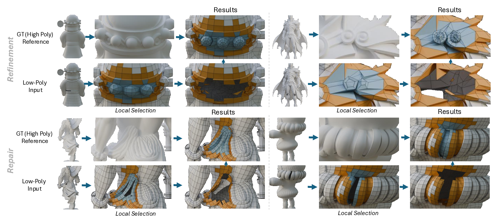
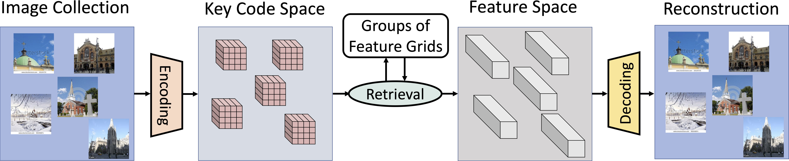
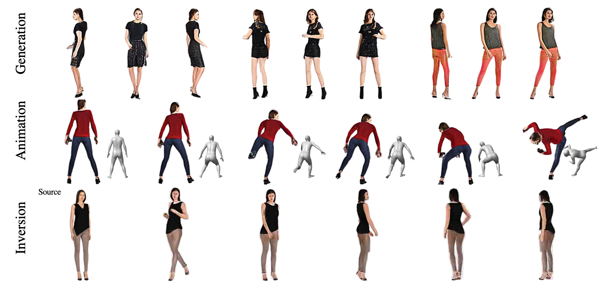
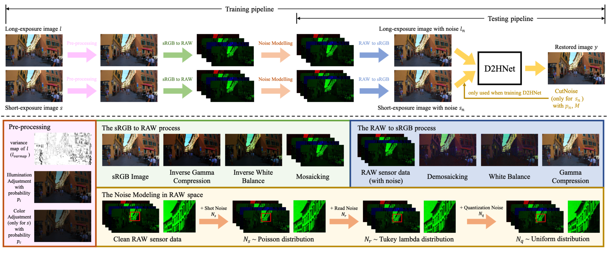
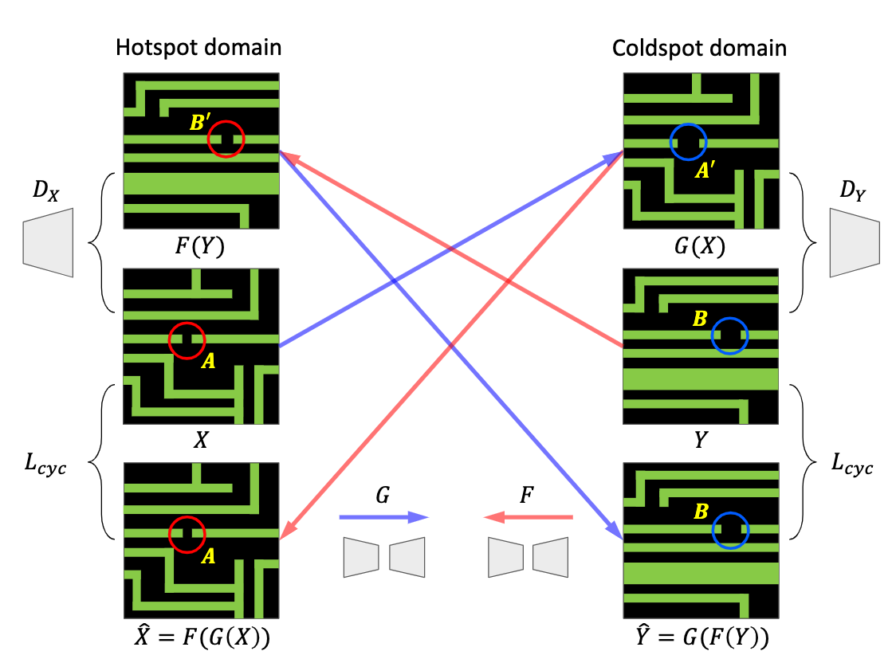
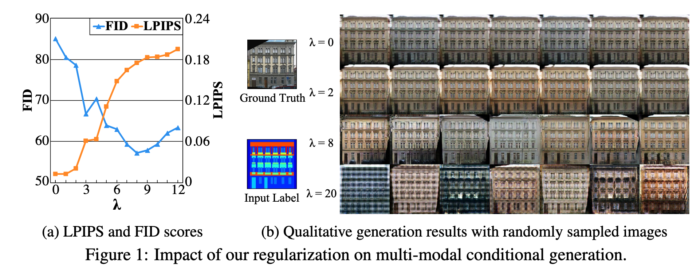
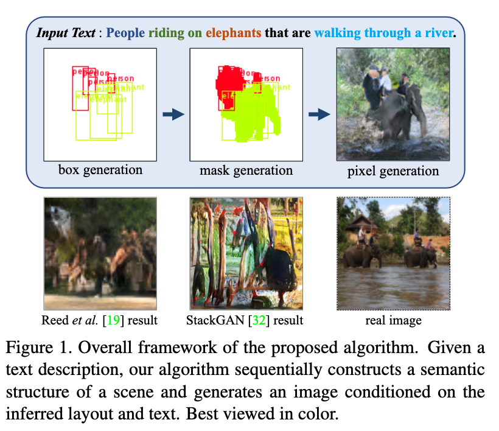

NeurIPS 2026
MeshFIM: Local Low-Poly Mesh Editing via Fill-in-the-Middle Autoregressive Generation
ArXiv
Project Page
Generative 3D Agentic 3D
I am Dingdong Yang (杨定东). I am currently a PhD student at Simon Fraser University, advised by Professor Hao (Richard) Zhang and Professor Ali Mahdavi-Amiri. I received my bachelor's degree from Nanjing University, China, and my master's degree from the University of Michigan, Ann Arbor. I conducted a research internship in Professor Honglak Lee's lab at UMich. After that, I worked as a full-time research assistant for one year in Professor Thomas Serre's lab at Brown University. I also worked as a computer vision engineer at ByteDance and other companies for three years.
My research interests lie in agentic 3D creation, generative models for 3D, and broadly related topics in generative modeling. View full CV
Research

NeurIPS 2026
ICLR 2025


ECCV Workshop 2022



